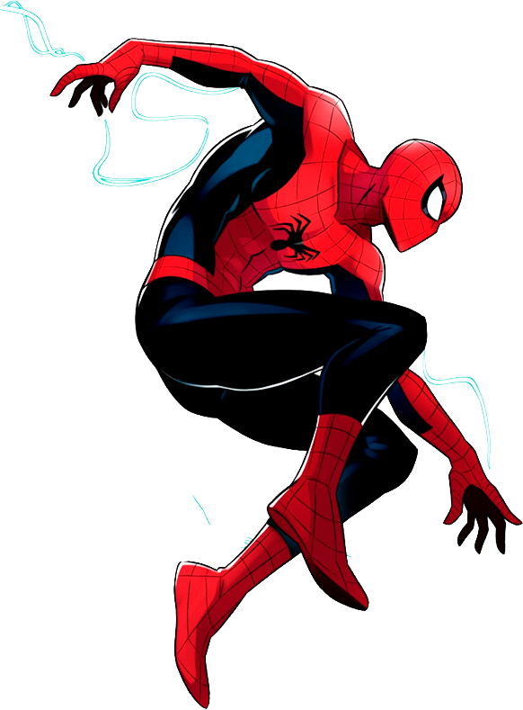

QUEM É?
O Homem-Aranha, identidade assumida por Peter Parker, é um herói marcado pela coragem, pela empatia e por um humor que o acompanha mesmo nos momentos mais perigosos. Apesar de enfrentar ameaças constantes, ele mantém sempre uma atitude leve, transformando o medo em piadas e improviso, algo que se tornou uma das suas características mais reconhecíveis. Inteligente, dedicado e profundamente humano. A sua determinação nasce da lição que o guia desde o início: “Com grandes poderes vêm grandes responsabilidades.”